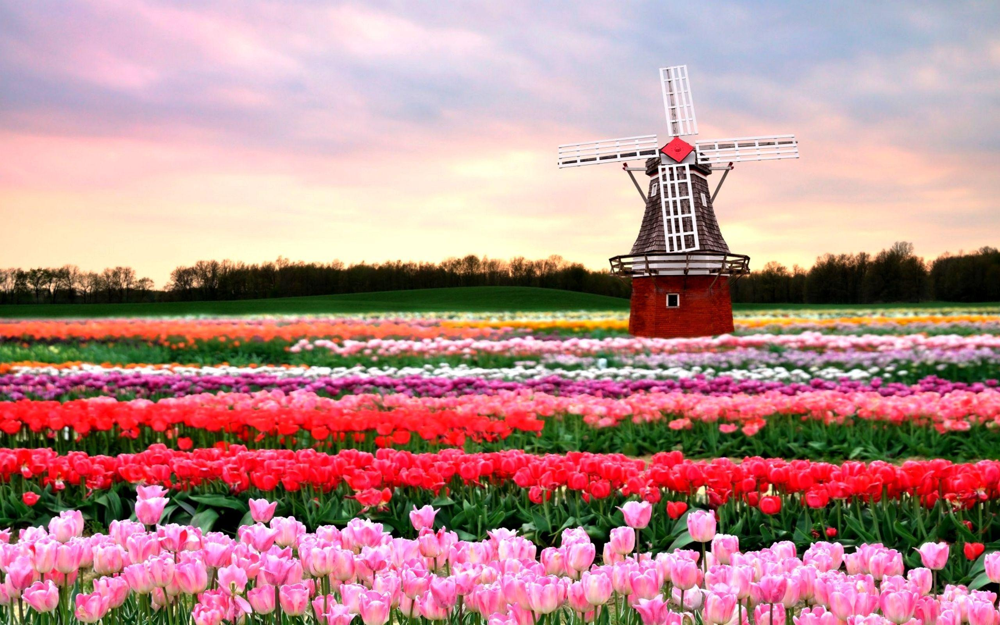
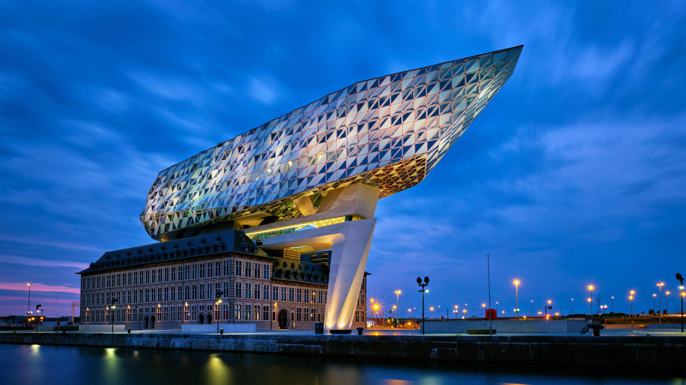

Available Itineraries

Grand Rhine & Dutch Canals
Delight your senses on a journey through the Netherlands, Belgium, Germany, France, and Switzerland. Taste Belgian chocolates, savor waffles and Dutch fries, and admire castles like de Haar and Gaasbeek. Experience traditions from German beer brewing to Rüdesheimer coffee making. Cruise the UNESCO-listed Rhine, lined with 40 castles.
Learn More
Best of Holland & Belgium
Awaken your senses on a captivating journey through the Netherlands and Belgium. Savor rich chocolates, warm waffles, and crispy street fries as you explore castles like de Haar, Bouchout, and Ghent's Castle of the Counts. Hear the melodies of Utrecht's Museum Speelklok and glide through Amsterdam's famous canals. With expert local guides, experience the very best of Holland and Belgium.
Learn More
Tulip Time
Celebrate spring in the Netherlands and Belgium as the Keukenhof Gardens and Floralia burst into bloom. Marvel at the charming Kinderdijk windmills and the artistry of Delft porcelain. Explore the medieval splendor of Bruges or Ghent and delight in Belgian chocolates, waffles, and cheeses. Embrace the storybook beauty of this enchanting region in full bloom.
Learn More